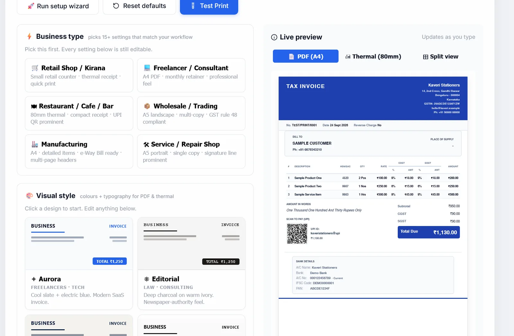

Print and PDF settings
The app-wide defaults for how every invoice looks on paper and in a PDF: business-type presets, designs, thermal receipts, copies, watermarks, fonts, colours, languages and formats. Each part of the Print & PDF tab in Settings has a ? that opens its section here. Each invoice can still override the basics from its own Customize panel.
#Print & PDF Settings: how they save
Open Settings and click the Print & PDF tab. Use it once when you start, to make your invoices look the way you want, and again whenever you change printer or paper.
There is no Save button: every change is kept the moment you make it. The Live preview on the right updates as you change things, using a sample invoice with your business name, so you can see the effect without touching a real invoice. On a narrow screen the preview moves below the settings.
Three buttons sit at the top of the card:
| Button | What it does |
|---|---|
| 🚀 Run setup wizard | Shows the first-run setup wizard again the next time the app is reloaded. |
| Reset defaults | Puts every print setting back to how it was on a fresh install, straight away and without asking. That includes your saved templates, number prefixes, signature image and letterhead, so there is no way back: use it only to start over. |
| Test Print | Sends a test print of the preview to your default printer. Pick the Thermal (80mm) preview tab first; in Split view it says the preview is not ready. |
These are the defaults for new invoices. On one invoice you can still turn things on or off under Customize.
Something wrong?
- The preview does not change: thermal settings show only on the Thermal (80mm) preview tab, and font scale only in a downloaded PDF.
- I pressed Reset defaults by mistake: there is no undo. Set things again, starting with Business type and Visual style, which set most of them in two clicks.
#Business type
The first box, ⚡ Business type. Picking the kind of business you run sets a dozen or so print settings in one go, and hides options that do not apply to you. Use it first; every setting below stays editable afterwards.
- Pick a typeClick a card. The app asks Apply "…" preset? and says how many settings it will change.
- ConfirmClick Apply preset. The card is marked ACTIVE and the preview changes.
| Business type | Set up for | Main settings it applies |
|---|---|---|
| Retail Shop / Kirana | A counter with a thermal printer | Bold capitals, prints straight after saving, "Qty × Rate" lines, no HSN, "Thank you! Visit again!", cut mark and 2 feed lines |
| Freelancer / Consultant | Professional A4 PDFs | Minimalist design, HSN, amount in words, page numbers and header on long invoices |
| Restaurant / Cafe / Bar | 80 mm receipts with a big UPI QR | Bold, prints on save, no HSN or amount in words, large UPI QR, 3 feed lines, "Thanks for dining with us!" |
| Wholesale / Trading | GST copies of goods invoices | Classic design, three copies (ORIGINAL, DUPLICATE, TRIPLICATE), HSN, amount in words, darker print |
| Manufacturing | Detailed A4 invoices | Corporate design, HSN, amount in words, page numbers and header, invoice QR, three copies |
| Service / Repair Shop | Simple single-copy bills | Classic design, no HSN, amount in words, signature shown |
While a business type is chosen, options it does not need are hidden, and a note says Some options are hidden because they don't apply to your … workflow. Show all options in that note clears the business type so you can see everything; your settings stay as they are. Some options are marked ★ Recommended for your business.
This is separate from the Business type tab of Settings, which decides which screens and features you see.

#Visual style
The second box, 🎨 Visual style: eight ready-made designs that set the colours and type for both PDFs and thermal receipts in one click. Each card shows a small invoice in its own colours; the one in use is marked ACTIVE. Click a card to use it, then change anything below.
| Design | Suits | Look |
|---|---|---|
| Aurora | Freelancers, tech | Cool slate with electric blue |
| Editorial | Law, consulting | Charcoal on warm ivory, capitals |
| Executive | Enterprise, B2B | Deep navy with soft champagne |
| Whisper | Designers, studios | Off-white, one hairline, nothing else |
| Sunset | Retail, cafes, salons | Warm terracotta on cream, with a tagline |
| Monoline | Developers, agencies | Monospace, dense rows, 90% size |
| Nordic | SaaS, studios | Teal on frosted white |
| Bold Retail | Fashion, sports | Black with a red accent, capitals |
Unlike business types, a design is applied without asking. A few designs also change one or two other settings (Monoline shrinks the text to 90% and hides the "Qty × Rate" line; Sunset turns the tagline on), and those stay as they are when you pick another design.
#Thermal receipts
Four groups, Typography, Layout, Content and Footer, that only affect 58 mm and 80 mm receipt printers (the small roll printers at shop counters). A4 and A5 PDFs are not changed by them.
They are hidden when your business type prints A4 or A5 PDFs (Freelancer, Service, Wholesale, Manufacturing); a grey note says so. Pick Retail or Restaurant, or Show all options, to see them.
For setting a printer up from scratch, see Thermal receipt printing. Switch the preview to Thermal (80mm) to see your changes.
#Typography (Thermal receipts)
| Setting | Options | Default |
|---|---|---|
| Font family | Monospace (Courier), made for thermal printers, or sans-serif (like Arial). For A4/A5 PDFs use PDF font family. | Monospace |
| Font size | Small (fits more), Medium, Large, Extra Large (easier for older customers) | Medium |
| Font weight | Normal, Bold, Ultra bold. Thermal heads print bold much darker, so bold is recommended. | Bold |
| ALL CAPS mode | Every line in capitals, like big supermarket receipts | Off |
#Layout (thermal)
| Setting | Options | Default |
|---|---|---|
| Line spacing | Compact (saves paper), Normal, Comfortable | Normal |
| Header alignment | Centre, or left | Centre |
| Thermal ink darkness | Standard, Dark (for older printers), Extra-dark. Darkens the logo and QR code so faded prints come out darker. | Standard |
| Force ALL CAPS in header | Business name always in capitals | On |
#Content (thermal)
Tick or untick what prints on the receipt: Show business logo, Show HSN code per item (needed on GST tax invoices; turn off for informal counter receipts), Show "Qty × Rate" line per item, Show amount in words, Show bank details and Show UPI QR code. All are on to start. With the QR on, UPI QR size is Small, Medium (the default) or Large.
With both HSN and "Qty × Rate" off, items print as a compact single line.
#PDF & universal print features
The grey box 📄 PDF & universal print features holds the groups below. They apply to every paper size, A4, A5, Letter, Legal and thermal, unless a group says otherwise. Each group title has its own ?.
Some groups only show for certain business types: Multi-copy for Wholesale and Manufacturing, Customer feedback QR and Reprint tracking for Retail and Restaurant, Dual currency for Freelancer and Service. With no business type chosen, everything shows.
#Auto-print
Auto-print on save: with this on, Save & Download also sends the invoice straight to your default printer, with no extra click. Made for busy shop counters. Off by default. It can also be turned on for one client only, in their details.
#Watermark
A large, faint diagonal word across every page of the PDF, such as PAID or DRAFT.
- Turn it onTick Show watermark. More settings appear.
- Choose the wordPick one under Watermark text: PAID, DUPLICATE (the default), DRAFT, OVERDUE, COPY, ORIGINAL, CANCELLED or REPRINT. Or tick Use custom text instead of preset and type your own in Custom watermark text, such as FOR INTERNAL USE.
- Choose how strongOpacity: very faint (5%) to very strong (40%); medium (15%) is the default.
If you choose your own text and leave the box empty, no watermark prints. Watermarks are never printed on thermal receipts. Cancelled invoices get their own CANCELLED mark whatever this setting says.
#Multi-copy (GST rule 48)
GST rules expect three copies of an invoice for goods (for the buyer, the transporter and yourself) and two for services. Tick Print multiple copies with labels and choose the Number of copies: 2 (Original + Duplicate, for services) or 3 (Original + Duplicate + Triplicate, for goods; the default). The PDF then holds every page once for each copy, labelled in a small box at the top right:
- ORIGINAL FOR RECIPIENT
- DUPLICATE FOR TRANSPORTER
- TRIPLICATE FOR SUPPLIER
Shown for the Wholesale and Manufacturing business types, or with none chosen.
#Multi-page invoices
| Setting | What it does | Default |
|---|---|---|
| Page numbers on pages 2+ | Prints "Page 2 of 3" at the bottom right of the second page onwards. The first page is not numbered. | On |
| Business name header on pages 2+ | Repeats your business name, with a line under it, at the top of every page after the first | On |
Both only appear when an invoice runs to more than one page. Page breaks always fall between rows, and never through the signature, stamp or an image.
#Print margins (mm)
Top, Bottom, Left and Right, in millimetres, from 0 to 100 (all 0 to start). Use them when printing on pre-printed letterhead paper, to move the invoice clear of the printed logo, or to leave room for binding. For example, a top margin of 40 starts the invoice 4 cm down the page.
#Verification codes
- Invoice number as QR: an 18 mm QR code at the bottom right of the last page, captioned "Verify invoice". It holds the invoice number, or, if you type a Verification URL (optional) such as
https://mycompany.com/verify/{invoice_number}, that address with the number filled in. Off by default. - Invoice number as barcode text: prints the invoice number large, in a typewriter font, at the bottom left of the last page, for filing. It is text, not a scannable barcode. Off by default.
Neither is the GST e-invoice QR code; that comes with E-invoicing.
#Customer feedback QR
Tick Feedback / review QR to print a QR code at the bottom left of the PDF that opens any web address, such as your Google review page or a WhatsApp chat. Paste the address in URL to encode; it only prints once an address is entered. Label above QR, "Rate us · Give feedback" unless you change it, prints with the code. Shown for the Retail and Restaurant business types, or with none chosen.
#Digital signature
A default signature, used when a business has none of its own. Show signature on invoice is on to start. Upload a picture (PNG, JPG, WebP or SVG, up to 2 MB) with Upload signature; Remove signature takes it off. Signatory name, such as Rakesh Kumar · Director, prints under it; left blank, the business name is used.
A signature and stamp uploaded in Settings, Branding for a business take priority over this one.
#Terms & Conditions on a separate page
Print T&C on a separate page moves long terms and notes to a page of their own, instead of squeezing them under the totals. Only affects invoices that have terms. Off by default. Your terms themselves are kept in Terms & Conditions Templates.
#PDF font family
Font used in generated PDFs: Helvetica (clean, the default), Times New Roman (traditional and formal), or Courier (typewriter style). It applies to A4, A5, Letter and Legal PDFs; thermal receipts have their own font setting.
#Layout & printer compatibility
- Compact upper header (fit more items on page 1): tightens the space above the items table so more rows fit on the first page. Use it when invoices often spill onto page 2. Off by default.
- Thermal buffer-safe mode: for cheap or old receipt printers that jam or stop half-way on large print jobs. Prints in black and white at lower quality. Off by default.
- Thermal print method: Direct HTML, the default, sends sharp text straight to the printer. If your printer or browser mishandles it, choose Via PDF.
#Custom prefix per invoice type
Each document type numbers separately, with a built-in prefix: INV for Tax Invoice, QUO for Quotation, EST for Proforma / Estimate, BOS for Bill of Supply, COMP for Composition, CN for Credit Note and DC for Delivery Challan. Type your own in the box next to a type to replace it: letters, numbers, hyphens and underscores only, up to 8 characters. Leave it blank to use the built-in one.
A new prefix starts its own count from 1. The rest of the number (year, separator, digits) follows Invoice Number Format.
#Reprint tracking
Show REPRINT badge on reprints: once an invoice has been printed before, this prints a red "REPRINT · Copy #2" (and so on) at the top of each page, so a copy cannot pass as the original. Off by default. The app counts every print either way. Shown for the Retail and Restaurant business types, or with none chosen.
#PDF quality vs file size
Print quality: Draft (about half the file size, fine for email and WhatsApp), Standard (balanced), or HD (sharpest text, largest file, best for printing and keeping). HD is the default.
#Dual currency display
For rupee invoices to clients abroad. Tick Show foreign-currency equivalent to show the total in a second currency too.
- Secondary currency: USD, EUR, GBP, AED, SGD, AUD or JPY.
- Rate (1 USD = ? INR): you set it, 83 to start. There is no live exchange rate; update it yourself.
- Display position: on a line below the ₹ amount, or in brackets after it.
Shown for the Freelancer and Service business types, or with none chosen.
On an invoice billed in another currency (for example US dollars), the same switch adds the rupee total to the invoice's EXCHANGE RATE line, at that invoice's own rate: 1 USD = 84.1000 INR · Total ₹84,100.00. See Billing in another currency.
#Company letterhead
If you have printed stationery, upload it as a picture and invoices print on top of it.
- Turn it onTick Use pre-printed letterhead image.
- UploadUnder Upload letterhead, pick a PNG, JPG or WebP picture of the full A4 page, up to 3 MB. Until you do, a yellow warning says the switch does nothing yet.
- Avoid printing your details twiceHide invoice header block, on by default, drops the app's own header because the letterhead already has your name and address.
Remove letterhead takes the picture off. Use Print margins to keep the invoice clear of the letterhead's printed parts.
#PDF template style (visual design)
Template changes the header and table style of A4 and A5 PDFs: Modern (a coloured header, the default), Classic (professional), Minimal (lots of white space), Corporate (formal blue), Minimalist (grey), Boxed grid (ruled boxes, like a quotation pad) and Tally style (order boxes, an HSN tax summary and a declaration). A design chosen under Visual style sets this for you. Thermal receipts have their own compact layout.
#Print darkness
Force darker text on printed PDF darkens grey labels and addresses so they do not fade on paper printers. On by default. It only changes the PDF, not the screen. Turn it off if your printer already prints greys crisply.
#PDF font scale
A slider for the Overall size of the PDF, from 80% to 140% (100% to start). Smaller fits more on a page; larger is easier to read. The on-screen preview always shows 100%; download a PDF to see the result.
#PDF Style Editor: your own colours
To match your brand, tick Use custom colours and set six colours with the colour picker or a hex code such as #1e40af. The preview changes as you go. Reset colours to defaults undoes them.
| Colour | Used for |
|---|---|
| Primary text | Client name, item names, totals |
| Muted text | Labels, addresses, dates and numbers |
| Accent colour | Section titles and the table header |
| Accent text | Text on the accent colour, usually white |
| Header background | Behind the business name and invoice title |
| Divider lines | Lines between sections and table rows |
Keep text dark on a light background so it prints clearly.
#Section labels and language
Language preset prints the section labels in English, Hindi, Tamil, Marathi or Bengali. You can also type your own wording for six labels: BILL TO, PLACE OF SUPPLY, BANK DETAILS, AMOUNT IN WORDS, TERMS & CONDITIONS and NOTES. The grey text in each box shows the current wording. Your own wording wins over the language; clear the box to go back.
#Formatting: date, number, currency
| Setting | Options |
|---|---|
| Date format | 02 Apr 2026 (Indian, the default), 02-Apr-2026, 02/04/2026, 04/02/2026 (US), 2026-04-02, or ISO 8601 |
| Number grouping | 1,00,000.00 (Indian, the default), 100,000.00 (Western), 100.000,00 (European) |
| Decimal places | 0, 2 (the default), 3 or 4 |
| Currency symbol position | Before the number (₹100, the default) or after it |
#Totals: round off invoice totals
Under 🧮 Totals. Round off invoice totals: when on, new invoices round the grand total to the nearest rupee and print the difference as a Round-off line, such as −0.40. It is on for new installs and saves as soon as you click. You can still turn it off for one invoice in Customize, under Totals. Changing it never alters invoices you have already saved.
#Row density
Vertical spacing in tables + sections: Compact (fits more per page), Normal (the default) or Comfortable (easier to read). It changes both the PDF and the on-screen preview.
#Custom tax rate presets
The built-in GST rates are 0, 0.1, 0.25, 3, 5, 12, 18, 28 and 40%. Since 22 September 2025 most goods are at 5%, 18% or 40%; 12% and 28% stay for older invoices (see GST basics: what rate do I charge?). Add your own, such as 1.5% or 7.5%: type the numbers separated by commas, such as 1.5, 7.5, and click Add. Each must be between 0 and 100. They appear in the rate list on every invoice. The × next to a rate removes it.
#My saved templates
Save your whole print setup under a name, so you can switch between setups (for example one for A4 and one for the receipt printer). Reset defaults clears the saved templates too.
- Name itType a name, such as Retail v1.
- Save itClick Save current as template. It appears in the list.
Load brings one back after asking. It replaces your current settings, so save the current setup first if you want to keep it. The bin deletes a template.
#Live preview
On the right of the tab (below the settings on a narrow screen). Three tabs: 📄 PDF (A4), 🖨 Thermal (80mm), and ⊞ Split view with both side by side. It shows a sample invoice numbered TEST/PRINT/0001 with three items, using your business name, so terms and notes are not shown. Some settings, such as font scale, only show in a downloaded PDF.